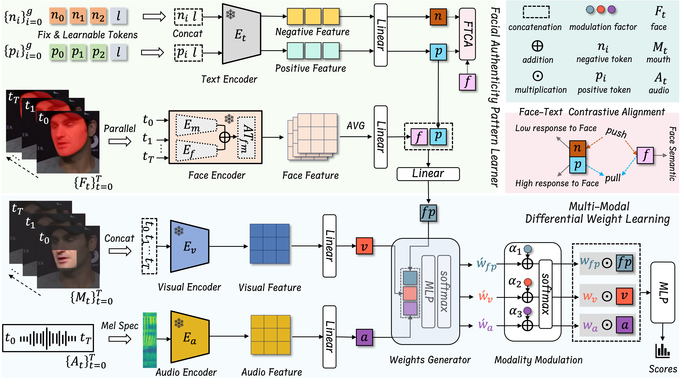

From Talking to Singing: A New Challenge for Audio-Visual Deepfake Detection
Official project page for our ICML 2026 paper on singing head deepfake detection.
1Center for Future Media, School of Computer Science and Engineering, University of Electronic Science and Technology of China, Chengdu, China
Overview
Abstract
With rapid advances in audio-visual generative models, reliable forgery detection becomes increasingly critical. Existing methods for audio-visual deepfake detection typically rely on cross-modal inconsistencies. In singing, rhythmic vocalization weakens this coupling and introduces a nontrivial domain shift, substantially degrading detection performance. We construct the Singing Head DeepFake (SHDF) dataset using rhythm-aware generative models to fill the gap in singing benchmarks. To cope with cross-scenario domain shifts, we propose a Text-guided Audio-Visual Forgery Detection (T-AVFD) framework that generalizes across both talking and singing scenarios. T-AVFD comprises a facial authenticity pattern learner and a multi-modal differential weight learning module. The pattern learner aligns facial features with multi-granularity textual descriptions to learn generalizable authenticity patterns. The weight learning module preserves intrinsic audio–visual consistency and adaptively integrates it with authenticity patterns via differential weighting. Extensive experiments on multiple talking head deepfake datasets and SHDF show consistent improvements over existing baselines and strong robustness under diverse perturbations.
Framework
Method Overview

Figure 1. Overview of the proposed T-AVFD framework. The face encoder is employed to extract semantic features from the facial region. Multi-granular text prompts, augmented with learnable tokens, are encoded into positive/negative embeddings that guide the model to learn generalized facial authenticity patterns. In parallel, visual and audio encoders from a pre-trained lip-reading model provide audio–visual alignment features. A weight generator and modality modulator then fuse the alignment features with the learned facial patterns to produce the final detection score.
Benchmark
SHDF Dataset

Figure 2. SHDF dataset construction.strong> We generate high-quality videos using audio-visual synthesis methods guided by musical rhythm and vocal prosody, resulting in expressive facial movements, natural head motion, and accurate lip synchronization.
Visualization
Generated Video Examples
We show eight representative synthesized singing-head video examples below.
Example 1
Example 2
Example 3
Example 4
Example 5
Example 6
Example 7
Example 8
Reference
Citation
@inproceedings{liu2026from,
title = {From Talking to Singing: A New Challenge for Audio-Visual Deepfake Detection},
author = {Ke, Liu and Jiwei, Wei and Wenyu, Zhang and Shuchang, Zhou and Ruikun, Chai and Yutao, Dai and Chaoning, Zhang and Yang, Yang},
booktitle = {International Conference on Machine Learning},
year = {2026}
organization = {PMLR}
}